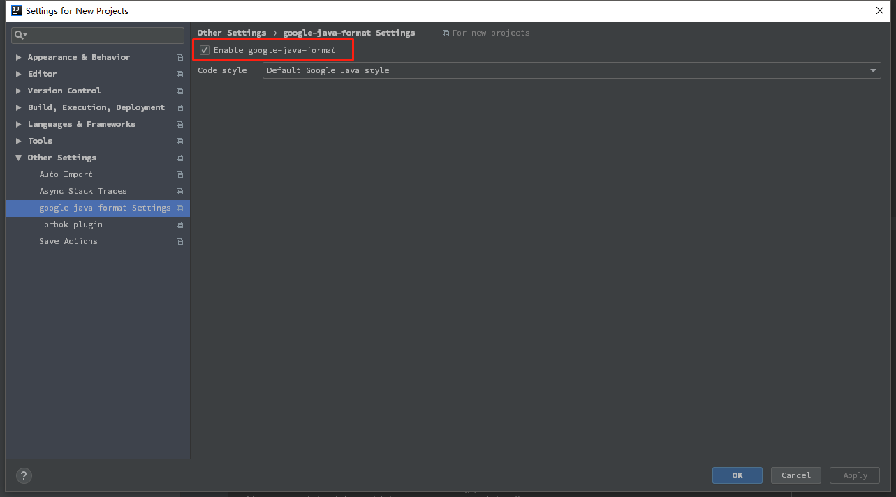
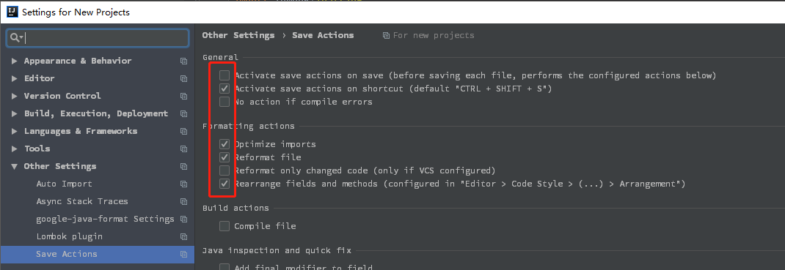
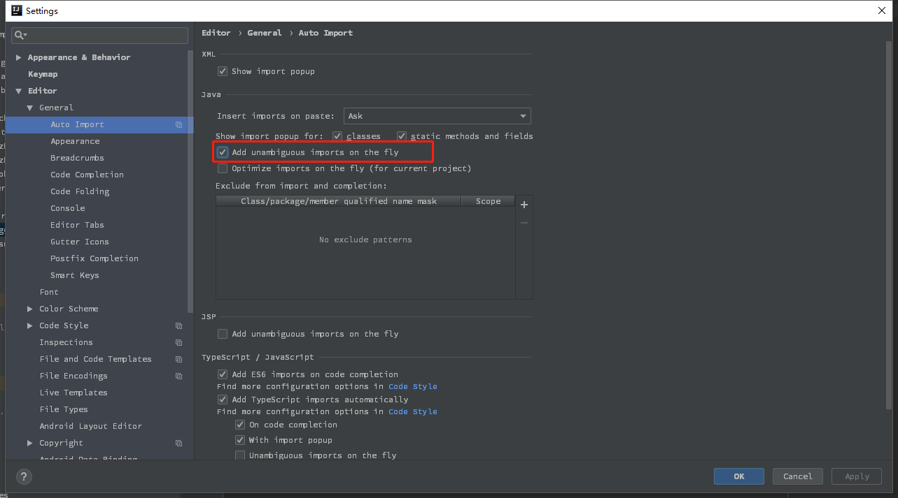
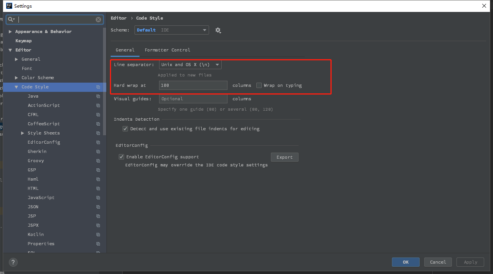
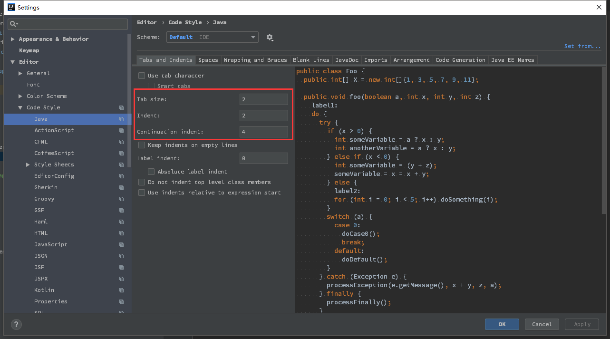

在 idea 中利用插件统一代码格式
统一的代码格式对代码的可读性和多人协作有极大的好处，在 idea 下借助插件可以轻易的做到这一点。
google-java-format
google-java-format 是 google 的一个开源项目，是一个用于按照 google 代码格式规则格式化 java 代码的插件，包括 eclipse 版本和 idea 版本。该插件遵循 《Google Java Style Guide》。
idea 安装 google-java-format
- 在 File -> Settings -> Plugins 中安装 google-java-format 插件。
- 在 File -> Other Settings -> Settings for New Projects… -> Other Settings -> google-java-format Settings 中勾选 Enable google-java-format。
Save Actions
Save Actions 是一款 JetBrains 产品下的插件，提供类似于 eclipse 中 save actions 类似的功能。
idea 安装 Save Actions
- 在 File -> Settings -> Plugins 中安装 Save Actions 插件。
- 在 File -> Other Settings -> Settings for New Projects… -> Other Settings -> Save Actions 中进行配置。
- 使用 Ctrl + Shift + S 快捷键即可进行代码格式的整理。
其他配置
自动导包
在 File -> Settings -> Editor -> General -> Auto Import 中勾选 Add unambiguous imports on the fly。
代码格式
- 在 File -> Settings -> Editor -> Code Style 中将 Line separator 设置为 Unix and OS X (\n)，将 Hard wrap at 设置为 100。
- 在 File -> Settings -> Editor -> Code Style -> Java 中设置缩进长度。